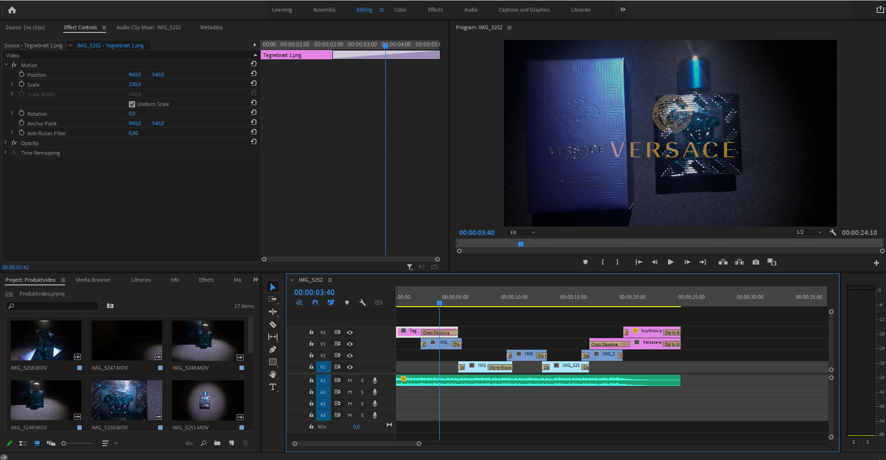

Video & Redigering
Jeg har i dette projekt lavet en video af et produkt som skal fremstille en "reklame" fra Versace. Videoen er filmet med min smartphone, og der er anvendt produkter fundet hjemmefra. Der er blevet anvendt sorte puder som baggrund og en lommelygte til belysning. Dette er derfor mit forsøg på at lave en "professionel" reklame ud fra de redskaber jeg har haft til rådighed.
Efter skydning af videoen blev de forskellige shots smidt ind i Adobe Premiere Pro, hvor jeg så kunne begynde at redigere videoen.
Her skulle jeg beskære diverse klip, og tilføje musik og baggrundsmusik. Jeg fik også anvendt Adobe Photoshop til forskellige overlays til at gøre reklamen fuldendt.
Ift. de redskaber jeg har haft er jeg tilfreds med resultat, se videoen her forneden eller på dette link:
Youtube link